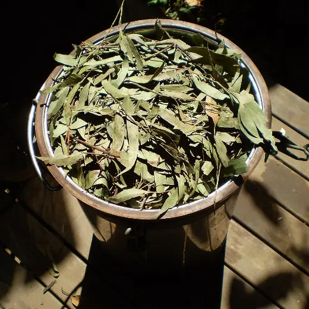

Drinks
Strawberry gum iced tea
Strawberry gum iced tea is made with wild strawberry gum.

How do you make strawberry gum iced tea?
Dried strawberry gum leaves steeped and chilled with honey.
Wild ingredients
- Strawberry gum (Eucalyptus olida): in season all year round
Watch the recipe

Video: Fountain on YouTube